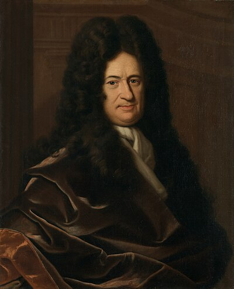

1646–1716
German
Calculus, logic, philosophy, mechanics
Leibniz was perhaps the last person who could plausibly claim to know everything. He made fundamental contributions to mathematics, philosophy, physics, law, linguistics, history, and theology, while also working as a diplomat and librarian for the House of Hanover.
His greatest mathematical achievement was the independent invention of calculus in the 1670s–1680s, contemporaneously with but separately from Newton. The bitter priority dispute between them dominated the mathematical world for decades. History's verdict: Newton had the ideas first; Leibniz published first and devised far better notation. The symbols $dy/dx$, $\int$, and $d$ are all Leibniz's, and we use them today because they make calculus easier to think about. Newton's dot notation survives only in physics for time derivatives.
Leibniz's approach to calculus was fundamentally algebraic. He thought in terms of infinitesimals — infinitely small quantities $dx$ and $dy$ — and treated $dy/dx$ as a genuine ratio. This was logically problematic (what is an infinitely small number, exactly?) but enormously productive. The continental mathematicians who adopted Leibniz's framework — the Bernoullis, Euler, Lagrange — rapidly outpaced the English followers of Newton.
In 1684, Leibniz published the product rule in Nova Methodus, the first paper on differential calculus ever printed. He discovered the Leibniz formula $\pi/4 = 1 - 1/3 + 1/5 - \cdots$ in 1674, and stated the alternating series test in 1705. He also encountered determinants in 1693 while solving systems of linear equations, independently of the Japanese mathematician Seki Takakazu.
Leibniz died in Hanover in 1716, largely neglected. His funeral was attended by his secretary alone. George I of England, a former employer, did not bother to send condolences. The neglect was temporary: his mathematics outlasted his patrons.
| Phase | Page | Referenced for |
|---|---|---|
| Phase 0 | Coordinate Geometry | Co-invented calculus in the 1660s–1680s |
| Phase 2 | Completeness of $\mathbb{R}$ | Used real numbers without formal foundation |
| Phase 3 | The Derivative | Invented calculus notation: $dy/dx$, infinitesimals |
| Phase 3 | Differentiation Rules | Published the product rule in Nova Methodus (1684) |
| Phase 3 | The Riemann Integral | Treated integration as reverse differentiation |
| Phase 3 | The Fundamental Theorem of Calculus | Co-discovered the FTC; $\int$ notation as elongated S |
| Phase 4 | Term-by-Term Operations | Leibniz–Gregory series for $\arctan x$ |
| Phase 4 | Abel's Theorem | Leibniz formula $\pi/4 = 1 - 1/3 + 1/5 - \cdots$ (1674) |
| Phase 5 | The Alternating Series Test | Stated the alternating series test (1705) |
| Phase 6 | Determinants | Encountered determinants while solving linear systems (1693) |
| Phase 6 | Determinants | Leibniz formula for the determinant |
| Phase 7 | The Multivariable Chain Rule | Leibniz notation makes chain rule look like fraction cancellation |
| Phase 7 | Schwarz's Theorem | Leibniz notation for mixed partial derivatives |
| Phase 8 | First-Order ODEs | Developed techniques for solving specific ODEs (1680s) |
| Phase 11 | Fourier Series | Leibniz formula for $\pi/4$ recovered from Fourier series |